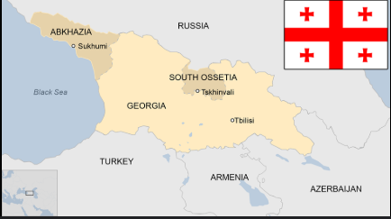

<!-- 1) src უბრალოდ ვიდეოს URL კოდის  

და imgის ჩასაწერია. 
control რამდენიმე ღილაკს გვიმატებს 
ვიდეოსთან muted ვიდეოს ხმას
უთიშავს.autoplay თავიდან რთავს ვიდეოსთან                - ->
loopი უთვალავჯერ იმეოფებს ვიდეოს
თუ ჩვენ ხელით არ გავაჩერეთ.
-->

<html>
<body>

<form>
 <label>
  <select> 
   <option hidden>chose your car</option>
   <option >mercedes</option>
   <option disabled>Bugatti</option>
   <option >BMW</option>
   <option >i dont prefer to chose an car </option>


  </select>
 </label>
</form>


<video width="320" height="240" controls>
  <source src="pigeon.mp4" type="video/mp4">
  Your browser does not support the video tag.
</video>


     
    
<h1>Georgia</h1>
<br>
<br>
<br>
<p>this is georgia pictures</p><br>
<p>georgia is in europe</p><br>
<p>heres list of foods to eay in georgia</p><br>

<li>
  <ul>kajapuri</ul>
  <ul>hinkali</ul>
  <ul>caqapuli</ul>
  <ul>caxoxbili</ul>
</li>

<button type="sumbit">register</button>
<button>see more</button>


 


<form>
 <label>
  <select> 
   <option hidden>chose your duck</option>
   <option >ducky</option>
   <option disabled>duck plushy</option>
   <option >pegion</option>
   <option >i dont prefer to chose an animal </option>


  </select>
 </label>
</form>


</body>
</html>


